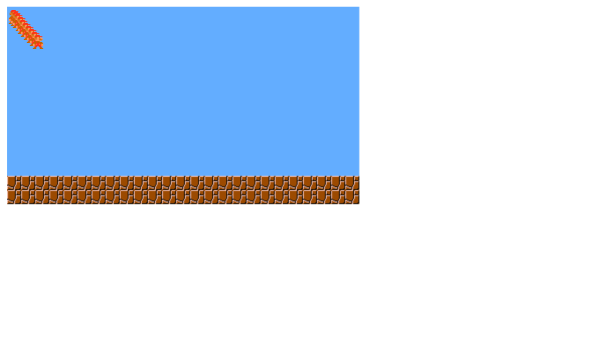
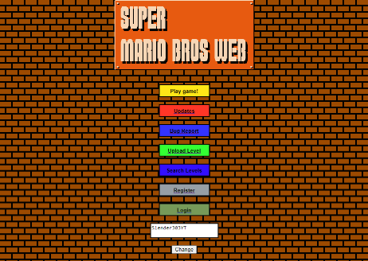

Update Pre-Alpha 1.1: Added: - Mario Screenshot: 
Update Pre-Alpha 1.2: Added: - Level TEST1-1 - Scrolling - Mario Animations - Mario Moving - Mario Jumping - Collisions
Update Pre-Alpha 1.3: Added: - Level Animations
Update Alpha 1.0: Added: - Level 1-1 Completed - Goomba & Koopas (can die) -Mario Can die Now - All blocks of the level 1-1 & 1-2
Update Alpha 1.0.1: Bug Fix: - Now if you fall off the level you die
Update Alpha 1.1: Added: - The timer counter - Score counter - Coin counter - World counter - Level 1-2 (incompleted and unnasesible) - Sounds
Update Alpha 1.1.1: Bug Fix: - Now you can't go beyond the level cap
Update Alpha 1.2(Big Update): Added: - Coins - Blue Goomba - Level 1-2 Is Now Accesible - When You Start A Level Show On Who World And level Are You And Your Lives Bug Founded: - Mario Lost Animations - If You Die The Game Crash
Update Alpha 1.2.1: Bug Fix: - Now Mario Has Animations - Removed Things: - Now you can go beyond the level cap but why? because that's why mario lost his animations
Update Alpha 1.3: Added: - If The Level Start - Show Your Lives and level who are you Bug Fix: If You Die The Game Dont Crash and the level reset
Update Alpha 1.4: Added: - 1UP, Powerup for mario get bigger - Sound When You Die - Now The Chance Is Not Infinite Bug Fix: - You Lose More Than 1 Live When You Die - If You Lose The 3 Lives And The Game Restart And You Die Again, You Will Go To Who You Died
Update Alpha 1.5: Added: - All Blocks Of Level 1-3 -Level 1-3 Completed - All Blocks Of Level 1-4 - Level 1-4 Bug Fix: -When You Get The 1UP You Get 2 Lives Not 1, Now You Get Only 1 Live More - If you die 3 times and the game resets you complete level 1-1 and go to level 1-1 again - Mario Cannot Go More Than Level Limit (again)
Update Alpha 1.6.1: Added: - More Controls Bug Fix: If You Enter on a pipe with a plant you die
Update Alpha 1.7(Big Update): Changes: - The game starts on the main page - Best Traduction To English (Im Spanish) ;') Added: - Android Up & Down Buttons - Menu Scene - Animated Dashboard Coin Bug Fix: In Level 1-2 If you go to the first pipe (warp) you go to the end of the level Optimization: - Now only what is inside the camera is drawn
Update Alpha 1.8: Added: - Checkpoints - Level 2-1 (Totally is a copy of 1-1) Changes: Level 1-4 Is Now Completed
Update Alpha 1.9(Big Update): Added: - Brick Particles - Bug Report Section - Usernames - Game Border(Decoration) Changes: Level 2-1 Is More or Less Completed Bug Fix: - In Level 1-1 Only two goombas is Bugged - Checkpoints Are Now Fixed
Update Alpha 1.10.1: Added: -Big Mario Star Animation - Crouch (if google translator works good) - Dead Animation - Glitched Levels For More Funny!!!! - Underwater Music
Update Alpha 1.11(Good & Big Update): Added: -Online Levels -Level Editor -Upload Levels -Upload levels by hand (can see the tutorial) Bug Fix: -Finally again Mario Crouch fixed
Update Alpha 1.11.1(Good Update): Added: -More Things in Level Editor - Register Account - Login Account Bug Fixes: -The blocks in level editor was not pushing in the correct place Screenshot: 